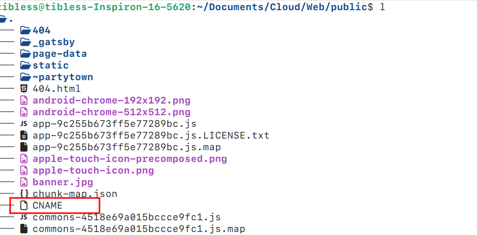

Welcome to Yunming Hu's Blog Page

📚 More Articles
- Website: https://hugophi.com
- Blog: https://ohpostintm3.top
📧 Contact Me
- Outlook: hugonelson07@outlook.com
- Google : hugonelsonm3@gmail.com
- QQ : 2678859151@qq.com
⁉️ Questions for me?
feel free for asking me any question, I will reply you if I'm free.
I have a question!
✨ Overview
What you might be interested in for this Blog?
- Advanced Programming Language Features.
- Machine Learning in Theory.
- Machine Learning in Competition & industry.
- Human Activity Recognition by DL.
- LLM Fine-tuning & Prompt Engeneering.
- Web Design Insights.
What I am recently do?
# 🔥 stl.rust
这个项目基于Rust提供了一些数据结构的基本实现，包括数组，链表，栈，队列，堆，图，树，哈希表，集合，映射，并查集等。同时提供了单元测试和基准测试，以验证数据结构的正确性和性能。仅供学习和研究使用。
# harkit
Some examples for ML/DL Methods & Strategies on HAR(link). Strategy here is fitting different models on a certain DataSet, so we can concentrate less on data preprocessing in a short period.
Rencently TODO:
- Basic ML/DL Model on UCI HAR.
What will be maintained in a long term?
# ChatApp
Online chat software for small teams(link).
Rencently TODO:
- User Control Model
- BackEnd of Client and Server
# RISCV CPU
Sim-core realized in verilog based on RISC-V I32 that can simulate the behaviour of CPU(link).
Rencently TODO:
- Step one of README.md of this project.
ML
这一系列文章涵盖了机器学习的相关主题，包括：
ML by Hand
这部分指向 Machine Learning Labs 项目的文档。这是一个基于numpy库的机器学习算法库，仅供学习，但是会逐步向标准库性能靠拢。
Foundations of Machine Learning Note
基于 M. Mohri 等人的 《机器学习基础》 的阅读笔记。
Rust Lang
1. 为什么选择 Rust？
Rust 是一种系统编程语言，旨在提供内存安全性、并发性和高性能，同时避免传统系统编程语言（如 C 和 C++）中的常见问题，例如空指针解引用、内存泄漏和数据竞争。Rust 的设计哲学强调安全性、并发性和速度，使其成为构建高效且安全应用程序的理想选择。
Rust 由 Mozilla 开发，并且是开源的。它的语法类似于现代编程语言，具有较高的表达能力。Rust 的核心特性之一是所有权与借用系统，它通过自动内存管理避免了垃圾回收（GC）的需求，同时也避免了内存泄漏和悬空指针等问题。
Rust 支持多种编程范式，包括面向对象编程（通过结构体和特性）、函数式编程（通过闭包和高阶函数）以及并发编程（使用轻量级线程和异步编程），从而提供了强大的表达能力和灵活性。
2. 🔥 主要特性
- 内存安全性：Rust 的所有权系统和借用检查器确保了内存安全，防止常见的内存问题，如悬空指针和内存泄漏。
- 并发性：Rust 的并发模型通过所有权、借用和锁机制消除了数据竞争，提供线程安全的并发支持。
- 零成本抽象：Rust 的抽象（如泛型、特性和闭包）具有极高的效率，几乎没有运行时开销，从而确保高执行性能。
- 现代语法：Rust 拥有现代、易于理解的语法，同时适用于低级系统编程。
- 无垃圾回收：Rust 通过所有权和生命周期管理内存，无需依赖垃圾回收器，从而实现更高的性能。
3. 关注内容
这里主要讨论一些Rust高阶的知识以及开发中的一些实际问题，包括但不限于：
- 泛型与特性
- 继承与多态
- 函数式编程
- 元编程
- 内存管理与所有权
- 错误追踪
- 编译优化与系统编程
- 科学计算
- 数据科学
- Web 编程
- Rust操作系统内核
因此在阅读之前建议您通过与大型语言模型的对话来熟悉一些基本的Rust语法概念。有关更详细的知识，可以参考Rust 的官方文档或阅读其源代码。
stl.rust
这是一个我手写Rust数据结构的项目，其主要特点是文档详尽，并且尽可能贴近与标准库的设计，后续会发布成一个包。
这个项目基于Rust提供了一些数据结构的基本实现，包括数组，链表，栈，队列，堆，图，树，哈希表，集合，映射，并查集等。同时提供了单元测试和基准测试，以验证数据结构的正确性和性能。仅供学习和研究使用。
另外，如果你要构建这个项目的文档，请先添加公式支持：
#![allow(unused)] fn main() { cargo install mdbook-katex }
Debug日志
这里记录着我在开发中遇到的各种问题，以及对这些问题的解决和原因分析。
E0506: Rust借用机制引发的一个小bug
1. 错误代码
fn main() { let mut x = 5; let y = &x; println!("{}{}", x, y); x = 7; println!("{}{}", x, y); }
2. 解读
这里我们在借用被遗弃之前，对原来的变量进行了移动，这在rust中数不允许的。这段代码里，我们在最后一次使用y之前，把7移动给x了，因而就发生了报错。我认为这个行为可以用生命周期来解释：
在Rust中，我们只需要保证：
这样做的目的无疑是防止悬空引用。另外：
Rust的引用是绑定在数据上的而不是变量上。
这里我们把y绑定在了数据5上，我们把7移动给x之后5就失去了所有者，此时推断5被释放，这时根据上面的规则，就不能再使用y了。
其实这个问题是我在写链表的时候发现的，问题代码如下：
#![allow(unused)] fn main() { let wraped_ptr = self.head.clone(); // 辅助指针 wraped_ptr = wraped_ptr.as_ref().unwrap().borrow().next.clone(); }
这里会和给出的代码报一样的错，原因是：我们在右边临时借用了wraped_ptr所指向的数据，此时它的生命周期是本行。然而我们在本行内修改了wraped_ptr的值，这里编译器会推断出wraped_ptr所拥有的数据被释放（就是原来的指针变成了next的指针），因而产生报错。
E0597: rust生命周期
1. 错误代码
# Exp. 1.
- Right:
fn main() { let str1 = "hello"; let longer; { let str2 = ", world"; longer = longest(str1, str2); } println!("{}", longer); } fn longest<'a>(x: &'a str, y: &'a str) -> &'a str { if x.len() > y.len() { x } else { y } }
- Wrong:
fn main() { let str1 = String::from("hello"); let longer; { let str2 = String::from(", world"); longer = longest(str1.as_str(), str2.as_str()); } println!("{}", longer); } fn longest<'a>(x: &'a str, y: &'a str) -> &'a str { if x.len() > y.len() { x } else { y } }
# Exp. 2.
- Right:
fn main() { let x = &1; let z; { let y = &2; z = larger(x, y); } println!("{}", z); } fn larger<'a>(x: &'a i32, y: &'a i32) -> &'a i32 { if x > y { x } else { y } }
- Wrong:
fn main() { let x = 1; let z; { let y = 2; z = larger(&x, &y); // 临时变量，即只在本行存在的变量，在函数中表达的生命周期跟随原始变量。 } println!("{}", z); } fn larger<'a>(x: &'a i32, y: &'a i32) -> &'a i32 { if x > y { x } else { y } }
2. 解读
Exp. 1.
- snip11中的代码可以通过编译，因为"hello"是&str类型，因而我们无法在程序中得到owner，所以它是'static周期，所以输入的两个变量的生命周期都是一样的'static（猜测是这样）
- snip12中的代码无法通过编译，因为.to_str()返回的&str是一个临时变量，在函数中代表的生命周期是和调用者String的生命周期是相同的，所以两个参数生命周期不同错误。
Exp. 2.
- snip21中的代码不能通过编译，因为1，和2被赋值后他们的所有者的生命周期是可以确定的，而临时变量在函数中代表的生命周期是和调用者i32的生命周期是相同的，所以两个参数生命周期不同错误。
- snip22中的&1，和&2的所有者的生命周期是和snip11中的&str是一样的，解释也是一样的。所以通过。
并且，原文中有这么一段，也许有帮助：
编译器采用三条规则来判断引用何时不需要明确的标注。第一条规则适用于输入生命周期，后两条规则适用于输出生命周期。如果编译器检查完这三条规则后仍然存在没有计算出生命周期的引用，编译器将会停止并生成错误。这些规则适用于
fn定义，以及impl块。第一条规则是每一个是引用的参数都有它自己的生命周期参数。换句话说就是，有一个引用参数的函数有一个生命周期参数：
fn foo<'a>(x: &'a i32)，有两个引用参数的函数有两个不同的生命周期参数，fn foo<'a, 'b>(x: &'a i32, y: &'b i32)，依此类推。第二条规则是如果只有一个输入生命周期参数，那么它被赋予所有输出生命周期参数：
fn foo<'a>(x: &'a i32) -> &'a i32。第三条规则是如果方法有多个输入生命周期参数并且其中一个参数是
&self或&mut self，说明是个对象的方法(method)(译者注： 这里涉及 Rust 的面向对象，参见第 17 章), 那么所有输出生命周期参数被赋予 self 的生命周期。第三条规则使得方法更容易读写，因为只需更少的符号。
# Refrence
Other Topics
我的个人网站与博客（旧版网站，已弃用）
1. 这是如何运作的？
我的网站是使用 gatsby-themes 生成的静态网站，并部署在 GitHub Pages 上，而我的博客是手写的，同样部署在 GitHub Pages 上。如果您不熟悉如何使用 GitHub Pages，可以参考这篇 快速入门文章。
2. 部署步骤
2.1. 网站
2.1.1. 安装
- 克隆项目，删除
.git并添加自己的 Git 仓库：
git clone https://github.com/LekoArts/gatsby-starter-portfolio-cara.git
cd gatsby-starter-portfolio-cara
rm -rf .git
git init
git remote add origin 'your github page'
- 安装依赖：
npm install
npm install gh-pages --save-dev
- 在
package.json中添加脚本：
"scripts": {
"develop": "gatsby develop",
"deploy": "gatsby build --prefix-paths && gh-pages -d public",
"build": "gatsby build --prefix-paths"
}
并修改 gatsby-config.ts，以下是一个可修改的模板：
siteMetadata: {
siteTitle: `您的站点标题`,
siteTitleAlt: `您的站点副标题`,
siteHeadline: `对您的站点的简短描述`,
siteUrl: `https://您的域名.com`,
siteDescription: `适合SEO的站点描述`,
siteImage: `/您的图片.jpg`,
siteLanguage: `zh`,
author: `您的名字或昵称`,
}
- 构建并部署。
- 将分支设置为
gh-pages，作为部署分支。如果不清楚如何操作，可以咨询 GPT。 - 在
public文件夹下创建 CNAME 文件，内容为您的域名。 - 重新构建并部署。
- 然后您可以在自己的域名上看到模板网站。
2.1.2. 项目结构与命令
网站是通过 gatsby-themes 生成的，整个过程很简单：编辑 .mdx 文件并运行几条命令即可。网站主要分为四个部分：介绍、项目、关于和联系。要编辑这些部分的内容，只需修改位于 $project/src/@lekoarts/gatsby-theme-cara/sections 文件夹下的 .mdx 文件即可，其中 $project 为您的项目文件夹。这些文件在构建时会被转换为 HTML 并合并到 index.html 中。然后通过 npm run deploy 命令即可部署。以下是常用命令及其用途：
# npm run build
构建整个项目并将生成的文件放置到 $project/public 文件夹中。需要注意的是，在构建之前，请确保 public 文件夹中有一个 CNAME 文件，内容为您的域名。例如，我的域名是 ohpostint.top，CNAME 文件内容如下所示：


# npm run develop
构建后，可以通过此命令在本地预览网站，同时实时编辑 .mdx 文件。例如，运行该命令后，点击 本地服务器链接 即可在浏览器中查看。当修改 .mdx 文件时，例如 intro.mdx，更新会实时反映在浏览器中。

# npm run deploy
调试完成后，通过此命令将网站部署到您的域名。
2.3. 博客
我的博客不依赖代码生成工具。您只需使用 Typora 编写 Markdown 文件并导出为 HTML 文件（如 index.html 和 index_zh.html）。以下是撰写文章的步骤：
# 创建文章项目文件夹
在我的博客中，每篇文章是一个独立的项目，这意味着您需要将文章相关的所有文件存放在同一个文件夹中。这些文件夹位于 $project/post/ 中。例如，撰写一篇关于 PCA 算法的文章，步骤如下：
mkdir ./post/pca
cd ./post/pca
# 创建并编辑 index.md
进入文章项目文件夹后，即可开始撰写文章。如果文章中需要插图，请将图片放入 $project/post/pca/asset/ 文件夹。
# 转换为 index.html
编辑完成后，将 index.md 转换为 index.html，我使用 Typora 的导出功能完成此步骤。
# 在首页中引用
编辑项目根目录下的 index.md，在其中引用新文章。然后将根目录下的 index.md 转换为 index.html。
# 支持多语言
可以为多语言支持创建 index_xx.md 文件，这里的'xx'指的是你的目标语言。比如中文：index_zh.md，然后重复24。同时，你需要在每一个index文件的头部插入其它语言版本的跳转，比如在英文的index.md的头部要插入：
中文版：[zh](./index_zh.md)
同样的在中文版的index_zh.md中插入：
English: [en](./index.md)
由于我们的组织架构，这句话几乎是固定的，这也是我为什么选择这种结构，有点类似于B+树。
2.4. 博客设计的思考
2.4.1. 项目结构是如何设计的？
首页的内容在项目根目录的 index.html 中编辑。文章位于 $project/post/，每篇文章的文件命名为 index_*.html，其中 * 用于支持多语言版本。因此，您可以轻松引用所有文章。在每个文章文件夹中，可以存放该文章的图片、动画等资源，而不会影响其他文章。
2.4.2. 这种风格的设计来源是什么？
该风格受 这个网站 和 Typora 主题 Turing 的启发，符合极简主义设计风格。您可以在以下链接中获取相关 CSS 文件：index.css 和 hugo.css。
Markdown 语法功能测试
[TOC]
本文档旨在展示各种 Markdown 语法功能，包括基本格式化、列表、链接、图片、代码块、表格、数学公式、Mermaid 图表等。这份综合测试将帮助您验证不同 Markdown 渲染器对这些功能的支持。
1. 标题
一级标题
二级标题
三级标题
四级标题
五级标题
六级标题
2. 文本格式
加粗文本
斜体文本
加粗并斜体文本
删除线文本
下划线文本
3. 列表
无序列表
- 第一项
- 第二项
- 第二项的子项 1
- 第二项的子项 2
- 第三项
有序列表
- 第一项
- 第二项
- 第二项的子项 1
- 第二项的子项 2
- 第三项
任务列表
- 完成任务一
- 完成任务二
- 完成任务三
4. 链接和图片
链接
这是一个 示例链接。
图片
注意：某些渲染器可能需要特定权限以显示外部图片。
5. 代码
行内代码
这里是一个示例代码 print("Hello, World!")。
代码块
def greet():
print("Hello, World!")
greet()
function greet() {
console.log("Hello, World!");
}
greet();
6. 块引用
这是一个块引用。
它可以跨越多行。
7. 表格
| 姓名 | 年龄 |
|---|---|
| Alice | 25 |
| Bob | 30 |
| Carol | 22 |
| 产品 | 价格 | 库存 |
|---|---|---|
| 苹果 | $1 | 100 |
| 香蕉 | $0.5 | 200 |
| 葡萄 | $2 | 150 |
8. 数学公式
行内公式
爱因斯坦的质能方程为 。
块公式
注意：数学公式的渲染取决于渲染器是否支持 LaTeX。
9. Mermaid 图表
流程图
graph TD
A[开始] --> B{决策}
B -- 是 --> C[执行操作]
B -- 否 --> D[结束]
时序图
sequenceDiagram
participant 用户
participant 系统
用户->>系统: 请求数据
系统-->>用户: 返回数据
甘特图
gantt
title 项目进度
dateFormat YYYY-MM-DD
section 计划
需求分析 :a1, 2024-01-01, 2024-01-15
设计 :a2, after a1, 30d
section 开发
前端开发 :b1, 2024-02-16, 2024-03-15
后端开发 :b2, 2024-02-16, 2024-04-15
section 测试
单元测试 :c1, 2024-04-16, 2024-04-30
集成测试 :c2, 2024-05-01, 2024-05-15
注意：Mermaid 图表需要渲染器支持 Mermaid 语法。
10. 分隔线
11. 其他
文本对齐
某些渲染器支持文本对齐：
左对齐（默认）
脚注
这是一个脚注示例。1
这是脚注内容。
高亮
这是 ==高亮== 文本。
表情
这是一个笑脸表情 😊。
简码
- :smile:
- :heart:
- :rocket:
12. 不支持的语法示例
行内 HTML
这是红色文本。
自定义容器
::: warning 这是一个警告框。 :::
嵌套任务列表
-
主任务
- 子任务一
- 子任务二
LaTeX 宏
\newcommand{\vect}[1]{\boldsymbol{#1}}
文献管理
1. 引言
本文介绍如何使用 Zotero 来管理文献。文献管理一直是一项必要却又富有挑战性的任务，其挑战在于如何对大量文献进行分类，将它们放入适当的类别，以及如何轻松检索所需的文献。本文提供了一种简单且高效的文献管理方法，利用 Zotero 软件使您的文献管理更加高效。我们将按以下顺序介绍该方法：
- 如何分类；
- Zotero 中的文件结构；
- 在我们的文件结构下的工作流程。
2. 如何分类？
分类被广泛认为是构建清晰结构的关键步骤，同时也是建立管理框架之前的重要一步。我们的方法得益于 Zotero 强大的文献管理功能，通过其内置的分类（称为“条目”）对文献进行分类。Zotero 中的条目类型包括：艺术作品、书籍等。您可以在 中找到所有条目类型。
附录 A：Zotero 中的条目类型
| 类别 | 描述 |
|---|---|
| 图书 | 一本完整的书籍 |
| 图书章节 | 图书中的某一章节或部分 |
| 学术期刊文章 | 发表在学术期刊上的文章 |
| 会议论文 | 在会议上发表的论文 |
| 学位论文 | 硕士或博士学位论文 |
| 专利 | 官方发布的专利文献 |
| 报告 | 技术报告或政府出版物 |
| 网页 | 来自某网站的网页 |
| 杂志文章 | 非学术性杂志上的文章 |
| 报纸文章 | 来自报纸的文章 |
| 手稿 | 未发表的手稿或草稿 |
| 信件 | 通信或信件 |
| 访谈 | 录音或文字记录的访谈 |
| 电影 | 一部电影 |
| 艺术作品 | 一件视觉艺术作品，如绘画或雕塑 |
| 音频记录 | 一段录制的音频 |
| 视频记录 | 一段录制的视频 |
| 演讲 | 在活动中发表的演讲 |
| 文档 | 一般文档 |
| 地图 | 地理或专题地图 |
| 播客 | 音频或视频播客的某集 |
| 电视广播 | 一档电视节目或片段 |
| 广播节目 | 一档广播节目 |
| 论坛帖子 | 在在线论坛中发布的帖子 |
| 博客文章 | 博客中的文章 |
| 电子邮件 | 一封电子邮件 |